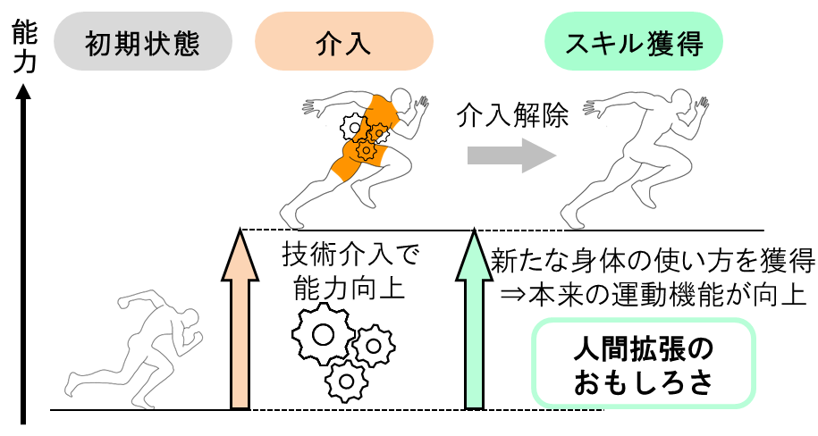
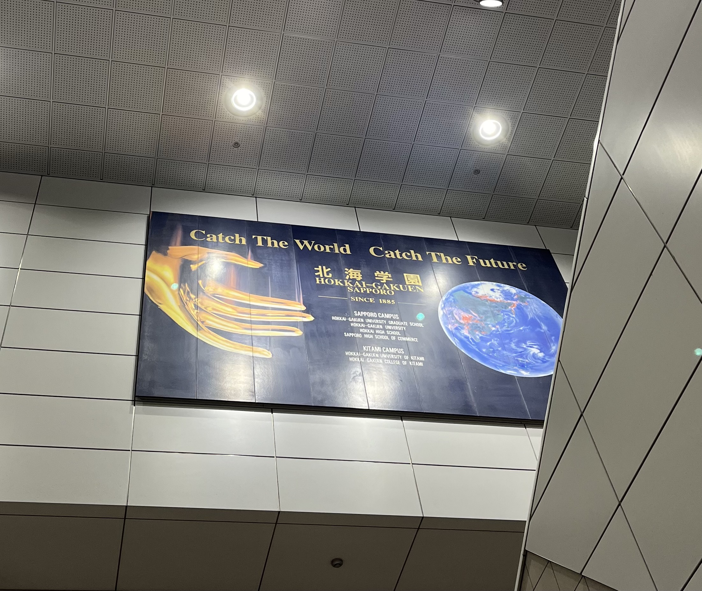

About

北海道大学 情報科学院
Human-Centric Engineering Lab. DC1
森 啓 (MORI Hiromu)
研究以外では，麻雀，ジブリ，映画，漫画などでいやされてます
Research

テーマ「走行拡張デバイスによる運動獲得過程の可視化と最適化」
- 走行運動への介入によるRunning Economyの改善
- デバイスによる走行運動介入効果の個人差発生要因の解明
Development

Activity

研究以外のあんなことこんなこと
北海学園大学 非常勤講師
共同研究型インターンシップ
企業PowerPointスライド作成[恵和ビジネス 様]